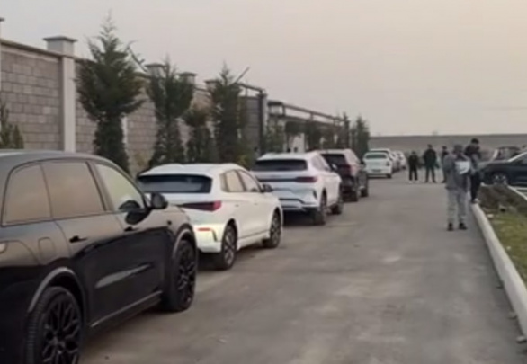

Import avtomobillarni Piskentdagi avtopoligonda sinovdan o‘tkazish amaliyoti bekor qilinadi
2025 yil 2 sentabrdan avtomobillarni Piskentdagi loboratoriyada sinovlardan o‘tkazish amaliyoti to‘xtatiladi. Bu qaror O‘zbekistonda faoliyat olib borayotgan rasmiy dilerlar sonining ko‘paygani bilan izohlanyapti.

So‘nggi yangiliklar
Hindiston O‘zbekistonda zamonaviy tibbiyot markazi barpo etadi
O‘zbekiston | 14:48
O‘zbekiston va Hongkong o‘rtasida to‘g‘ridan to‘g‘ri aviaqatnov yo‘lga qo‘yilishi mumkin
Jahon | 14:45
Rossiyadan 16 nafar fuqaro O‘zbekistonga qaytarild
Jahon | 14:45
Maktab ta’miriga jalb etilgan o‘qituvchilar voqeasi ortidan Xovos tumani hokimi hayfsan oldi
Jahon | 14:45
3
4